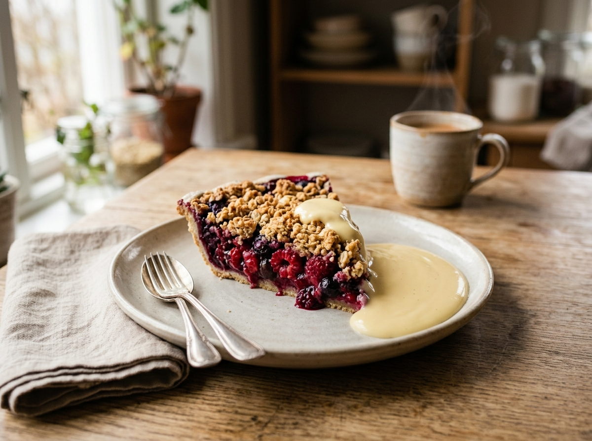
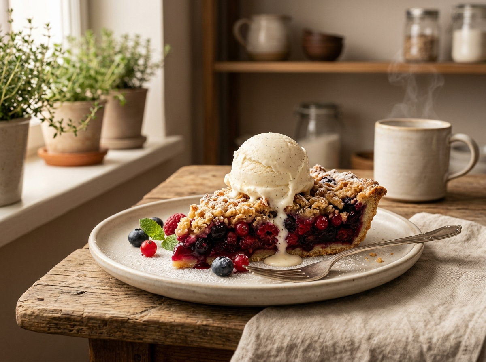

Enkelt recept på smulpaj med frysta bär
Gör en traditionell smulpaj med detta enkla och goda recept.
Ingredienser
För 6 portioner
Fyllning
- 500 g frysta blandade bär
- ½ dl strösocker
- 1 msk potatismjöl
- 1 tsk vaniljsocker
Smuldeg
- 125 g smör
- 2 dl vetemjöl
- 1,5 dl havregryn
- 1 dl strösocker
- 1 tsk vaniljsocker
- 1 nypa salt
Så här gör du
- Sätt ugnen på 200℃ över-/undervärme.
- Lägg de frysta bären direkt i en pajform. Tina dem inte först.
- Blanda bären med socker, potatismjöl och vaniljsocker.
- Smält smöret och låt det svalna något.
- Blanda vetemjöl, havregryn, socker, vaniljsocker och salt i en skål.
- Tillsätt smöret och nyp ihop till en smulig deg
- Fördela smuldegen jämnt över bären.
- Grädda mitt i ugnen i 25–30 minuter, tills ytan är gyllenbrun och bären bubblar.
- Låt pajen svalna i cirka 10 minuter före servering.
Serveringsförslag
Servera gärna med vaniljsås eller vaniljglass

